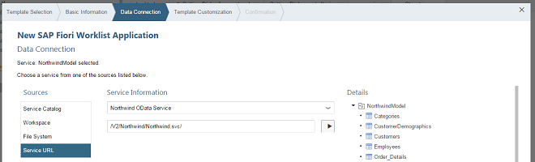
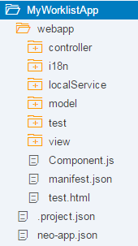

Step 1 (Option 1): Creating the Initial App with an App Template in SAP Web IDE
This first step is only relevant if you decided to use the SAP Web IDE. In this step, we will set up the worklist app using a template and configure the service to display products in the app. The template includes generic app functionality and tests that can be easily extended with custom functionality for our use case.
Set up your SAP Web IDE and define a destination to the Northwind OData service as described under App Development Using SAP Web IDE.
-
Launch SAP Web IDE.
-
Choose
 File
File  New Project from Template
New Project from Template
-
Select the SAP Fiori Worklist Application template and choose the latest SAPUI5 version in the Available Version field. Choose Next.
-
On the Basic Information screen, enter MyWorklistApp as project name, don't specify an application domain.
-
On the Data Connection screen, select Service URL in the Sources area.
Under Service Information, choose Northwind OData Service and enter the URL /V2/Northwind/Northwind.svc/ .NoteValidate the URL by choosing the Load service metadata button beneath the URL. In the Details area, you should now see the service entities as displayed in the following screenshot: If you cannot find the Northwind service, create the destination as described under Create a Northwind Destination.
NoteChoose Next.At runtime, the relative URL /V2/Northwind/Northwind.svc/ is prefixed with /destinations/northwind. As a result, all our Northwind OData requests will be proxied via the Northwind OData Service destination that is defined in the SAP Cloud Platform Cockpit. The destination contains the URL to the resource http://services.odata.org and has the proxy type Internet. From this configuration the proxy knows where the requests shall go to.
Instead of /V2/Northwind/Northwind.svc/, you could also enter the complete URL http://services.odata.org/V2/Northwind/Northwind.svc/.
-
On the Template Customization screen, enter the following data:
Application Settings Field
Value
Description Title
Manage Products
Title of the app which will displayed as header.
Namespace
mycompany.myapp
The application namespace is a unique identifier for your application resources.
Description
My Worklist App
Short description of your app.
Type
Standalone App
We create a standalone app that can be run without SAP Fiori launchpad (FLP).
If you choose to build an App for SAP Fiori Launchpad, you automatically get test HTML files with the FLP Sandbox, and the app automatically includes additional features like Save as Tile or Share in SAP Jam.
Data Binding Field
Value
Description Object Collection
Products
This is the main entity set that will be displayed in the app. Some of the other fields below are automatically selected depending on this field.
Object Collection ID
ProductID
The unique key that is used to identify the object collection.
Object Title
ProductName
The display name of the main entity.
Object Numeric Attribute
UnitsInStock
The number displayed next to the product name. In this scenario we pick the UnitsInStock. This represents the stock quantity of the product.
-
Choose Next and Finish
A new folder MyWorklistApp is now available in your local workspace. It contains the following files and folders of the initial app:
Folder structure of the initial projectNoteThe auto-generated files project.json and neo-app.json are only necessary for working with SAP Web IDE. They are not included in case you download the example code from the Samples.
These three files will not be changed throughout this tutorial, so we will ignore them in the following steps.
-
Run the app.
Our component-based app does not have an index.html file. A component-based app would typically be included in a surrounding container, like the SAP Fiori launchpad and therefore it does not need to have an index.html file.
To be able to run the app in different test modes (for example, with or without mock server), there are several HTML files available in the webapp/test folder.
To run the app in test mode in SAP Web IDE, chooseRun Run in FLP Sandbox (Mock Server).NoteThe template comes with two run configurations for SAP Web IDE, you can either run the app with data from a real back-end service (Run in FLP Sandbox) or with local mock data (Run in FLP Sandbox (Mock Server)).
We choose the mock server option, because then the app will still be able to run even if the back end is unavailable or the service is not implemented yet. We could even configure a delay to make local testing more realistic.
You should see the screen, which contains generated mock data.
When you choose the Back button, you should see an SAP Fiori launchpad with a list of tiles each representing an application. There you will also see the Manage Products tile. Choose that to run our generated app again.
From now on you can quickly run the app by selecting the root folder MyWorklistApp of your project in SAP Web IDE and pressing the Run button. The system will automatically use the option from the Run menu that you chose last (in this case, the Run with MockServer option).
The texts in the i18n.properties file are automatically generated based on the template Customizing (OData entity set, entities, properties, and texts). The result can be incorrect texts like "Enter an <Products> name or a part of it." You should therefore revise the generated texts in the i18n.properties file.